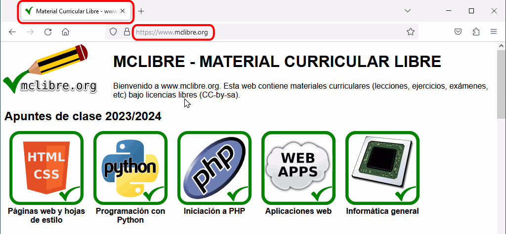
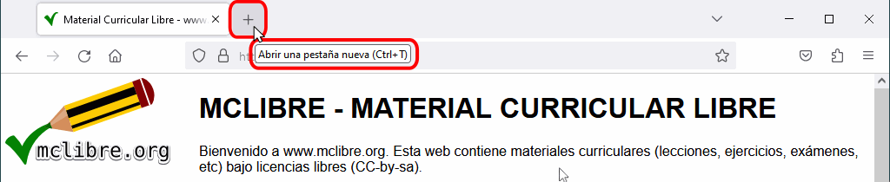

Las pestañas permiten visualizar varias páginas en la misma ventana del navegador, reduciendo el número de ventanas abiertas.
El título de página se muestra en la pestaña.
La barra de dirección muestra la URL de la página que estamos visualizando.

Abrir una nueva pestaña
Se puede abrir una nueva pestaña:
haciendo clic en el signo + situado a la derecha de la última pestaña abierta.
pulsando la combinación de teclas Ctrl+t.

La nueva pestaña se abre a la derecha de la última pestaña abierta:
Cambiar de pestaña
Se puede cambiar de pestaña:
haciendo clic en la pestaña.
pulsando la combinación de teclas Ctrl+AvPág o Ctrl+Tab (para pasar a la pestaña siguiente) o Ctrl+RePág o Ctrl+Mayús+Tab (para pasar a la pestaña anterior). Las combinaciones de teclas Ctrl+1, Ctrl+2, Ctrl+3, etc. nos llevan directamente a la primera, segunda, tercera, etc. pestaña. La combinación Ctrl+9 nos lleva directamente a la última pestaña.
Cerrar una pestaña
Se puede cerrar una pestaña:
haciendo clic en el aspa situada en la parte derecha de la pestaña.
pulsando la combinación de teclas Ctrl+w o Ctrl+F4.
Al cerrar una pestaña, el navegador muestra la pestaña siguiente (o la anterior si hemos cerrado la última pestaña):
Cerrar las demás pestañas
Se pueden cerrar el resto de pestañas y dejar únicamente una pestaña haciendo clic derecho en la pestaña y eligiendo la opción "Cerrar las demás pestañas":
Cerrar las pestañas a la derecha
Se pueden cerrar todas las pestañas situadas a la derecha de una pestaña haciendo clic derecho en la pestaña y eligiendo la opción "Cerrar pestañas a la derecha":
Restaurar una pestaña cerrada
Se puede restaurar la última pestaña cerrada (y también las anteriores, repitiendo la operación):
haciendo clic derecho en la zona libre a la derecha de las pestañas y eligiendo la opción "Deshacer el cierre de la última pestaña".
pulsando la combinación de teclas Ctrl+Mayús+t.
Reordenar pestañas
Se pueden reordenar las pestañas arrastrándolas a la posición deseada, como muestra el siguiente vídeo: